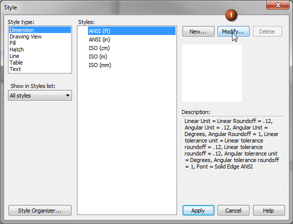
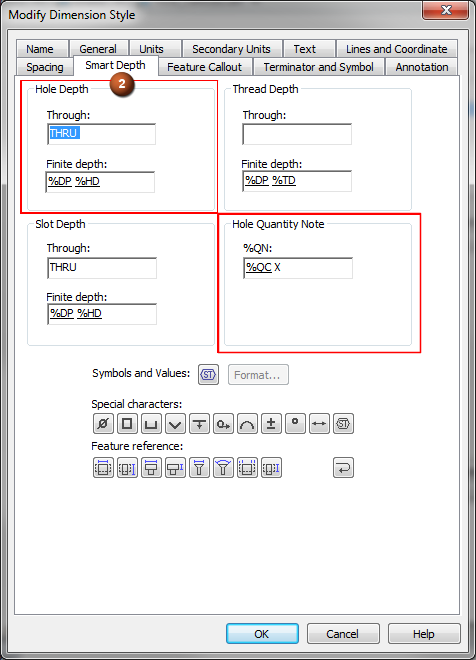
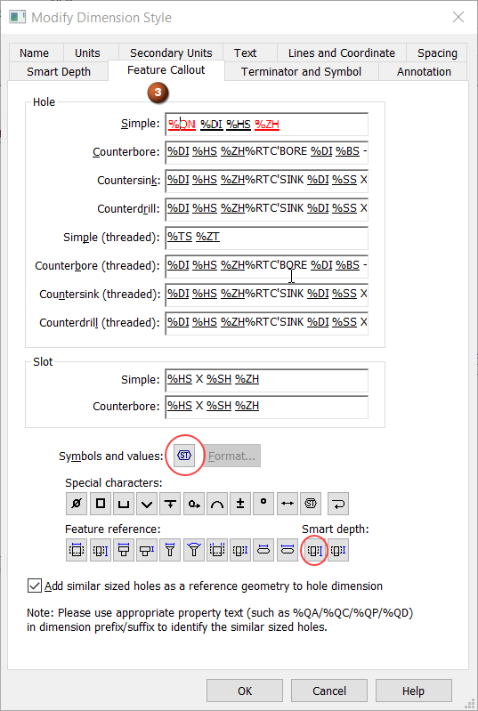
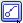
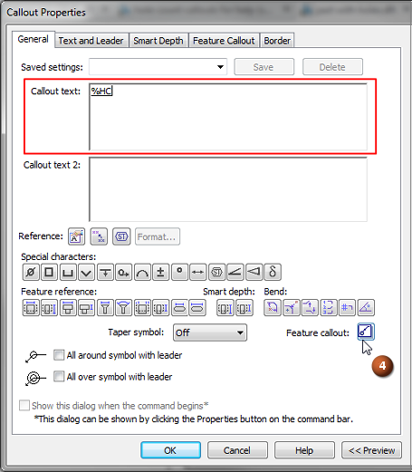
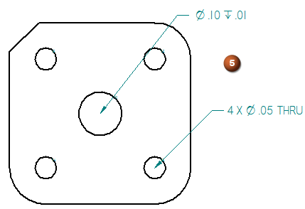

Define smart feature properties in the Dimension style
The most efficient way to add callout annotations to smart features such as holes, slots, and threads is to predefine the properties that you want to include in the Dimension style. Then when you place a feature callout, the hole or slot geometry that you select determines which string is used to extract information from the part model.
You also can use this technique to predefine the hole count text (quantity note) for dimensions whose type is set to Feature Callout.
-
Use the Styles command
 to modify Style type=Dimension. Both dimensions and annotations are controlled by the dimension style.
to modify Style type=Dimension. Both dimensions and annotations are controlled by the dimension style. 
The Modify Dimension Style dialog box displays default content specified by the dimension style you are modifying.
-
On the Smart Depth tab, define the smart hole depth properties and hole quantity prefix.

-
Add or edit the property text strings and plain text in the Hole Depth section.
Words like "THRU" and "DEEP" are plain text. You can substitute symbols using the buttons on the Smart Depth tab, and you can insert any other valid property text values and symbols by clicking inside the box before selecting the Select Symbols and Values button
 . See Property text codes for a list of property text codes and the information they extract.
. See Property text codes for a list of property text codes and the information they extract. -
Add or edit the property text strings and plain text in the Hole Quantity Notes section.
-
Open the Select Symbols and Values dialog box.
-
In the Values section, expand the Feature Reference list, and then scroll to the bottom of the list.
-
Double-click one or more of the property text codes shown in the following table to specify the kind of holes to count. (Alternatively, you can type the property text codes directly into the %QN box.)
Note:To include any and all holes, you can enter %QC%QP%QA. You also can type plain text, such as the X multiplier shown in the resulting feature callout examples in the table below.
Enter this
To count this type of hole feature
Example
%QC
Quantity-Coplanar
Counts equivalent holes on the same plane and with axes that are parallel and pointed in the same direction. Use this option to count holes in a hole pattern.
%QC X

%QP
Quantity-Parallel
Counts equivalent holes sharing the same orientation (the axes are parallel and pointed in the same direction).
%QP X

%QA
Quantity-All
Counts equivalent holes in the part, based solely on hole parameters. Holes can be located on faces with different orientations.
%QA X

%QD
Quantity-User Defined
Identifies the holes of the same type, diameter, and depth. You can then click the Referenced Geometry
 and select the required holes from the highlighted holes to consider them for hole
dimension.Note:
and select the required holes from the highlighted holes to consider them for hole
dimension.Note:The holes which are already toleranced with a separate dimension are not considered.
%QD X and selecting the reference geometries

-
-
-
On the Feature Callout tab, define the smart hole feature properties.
This includes creating a cross-reference between the depth (%ZH) and quantity (%QN) information you entered on the Smart Depth tab and the property strings you define for each type of smart feature on the Feature Callout tab.

-
Click inside the box corresponding to the hole type that you want to modify:
-
Simple
-
Counterbore
-
Countersink
-
Counterdrill
-
-
To insert a Hole Quantity Note as a prefix, move the cursor to the start of the line, and then type %QN.
Example:Type %QN in both the Simple and Counterbore boxes to ensure that the quantity prefix is included each time a simple or counterbore feature callout annotation is placed or a feature callout dimension is placed.
-
Look for the %ZH property text code in the hole type box; you may have to use the right arrow key to scroll far enough to the right to see it. If you do not see %ZH, then click the Smart Depth button
 to insert it into the string where you want the depth information to appear in the
callout or dimension text.
to insert it into the string where you want the depth information to appear in the
callout or dimension text.
-
To consider the similar holes while creating a hole dimension using prefixes, select the Add similar sized holes as a reference geometry to hole dimension check box.
This check box is available only for the part and sheet metal environment.
-
-
On the drawing, sketch, or PMI model, do one of the following:
-
To add a callout that references the hole feature properties you defined:
-
Select the Callout command and then click the Feature callout button

.This inserts the property text code %HC for a smart hole callout into the Callout text box.
%HC causes the callout to reference the predefined property text strings on the Feature Callout page of the Modify Dimension Style dialog box, plus any overrides that you make locally on the Feature Callout tab in the Callout Properties dialog box.

-
Select the hole geometry to retrieve the hole information from the model.
The callout displays the hole type, size, and other specifications, as well as the depth, symbols, and any additional that was specified in the style.
Example:Different properties were defined for these two types of holes.

-
-
To add a feature callout dimension that references the hole feature properties you defined, use the Smart Dimension command. To learn how to do this, see Place a feature callout dimension.
-
How do I
Place a calloutPlace a hole callout
Place a feature callout
Customize a feature callout
Learn more
Formatting callout text and borderManipulating callouts
Look up more details
Callout commandCallout command bar
Callout Properties dialog box
General tab (Callout Properties dialog box)
Text and Leader tab
Feature Callout tab
Border tab (Callout Properties dialog box)
Quick links
Place a feature callout dimensionBasic reference and property text rules
Format codes to modify reference and property text output